FoodLit — Cook More, Order Less
A personal app I built to stop defaulting to food delivery: snap or search a dish, get the recipe, and buy the missing ingredients at the cheapest price across Zepto, Blinkit and Instamart.
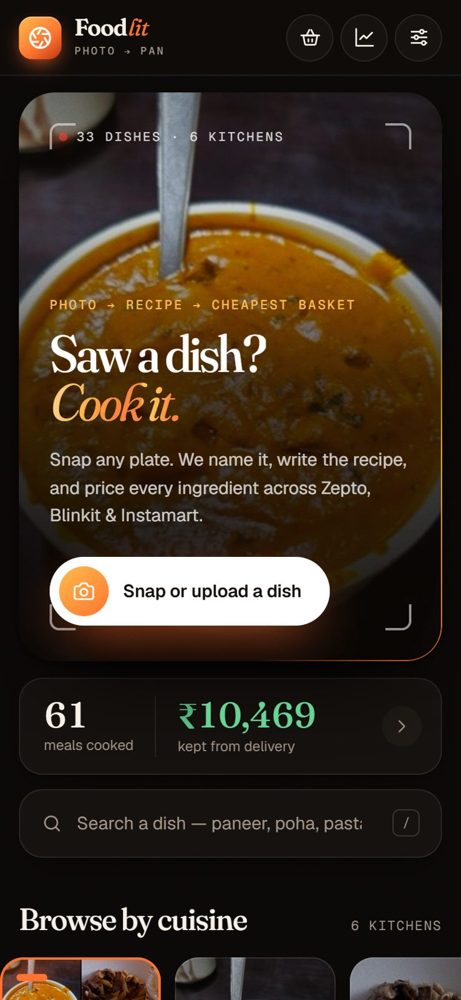
- Role
- Product owner, designer and builder
- Stack
- Installable web app, vanilla JS, Claude vision
- North star
- Meals cooked instead of ordered
- Period
- 12 Aug – 10 Oct 2026
The goal was behavioural, not technical: cook more at home, order less. In two months the app logged 61 meals I would otherwise have ordered — and kept ₹10,469 away from delivery apps.
Ordering in is the path of least resistance
A delivered paneer butter masala costs about ₹349 for two. Cooking it at home uses roughly ₹160 of ingredients. Five or six times a week, that gap becomes thousands of rupees a month — and restaurant versions use far more butter, cream and oil.
I still kept ordering, because the friction sat in the wrong place:
- Deciding what to cook — I’d see a dish but not know its name or recipe.
- Knowing what to buy — checking the kitchen and listing what’s missing takes effort.
- Buying it cheaply — the same basket costs different amounts on each app.
- No feedback loop — nothing showed what cooking was actually saving.
Discover, decide, track
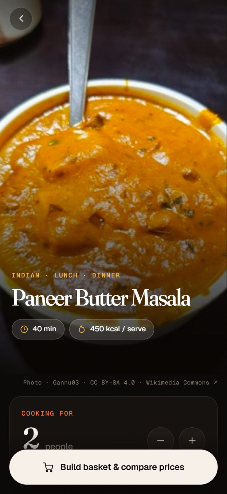
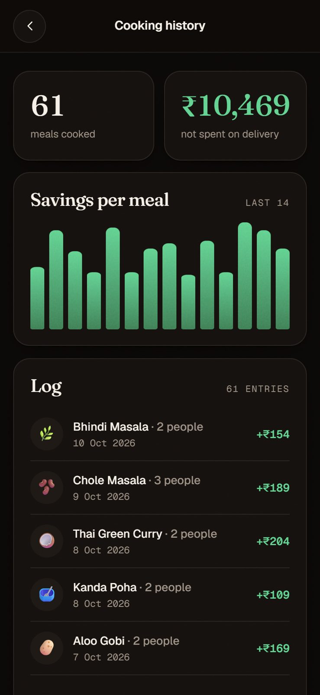
- 33 curated dishes across 6 cuisines, each with quantities, steps and a video
- Serving scaling from 1 to 8 people — quantities, calories and costs all rescale
- A pantry that remembers what I own, so it’s never re-bought
- Full-basket price comparison across Zepto, Blinkit and Instamart
- Calories per serving on every dish
The core loop
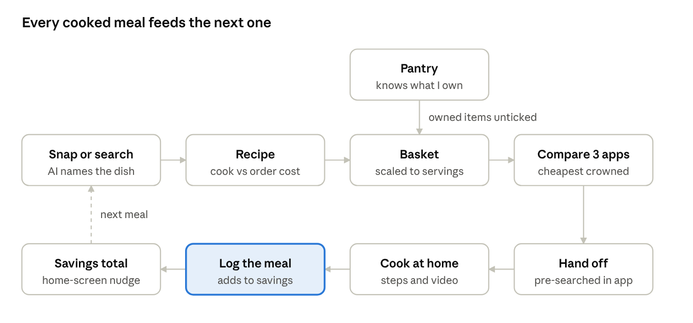
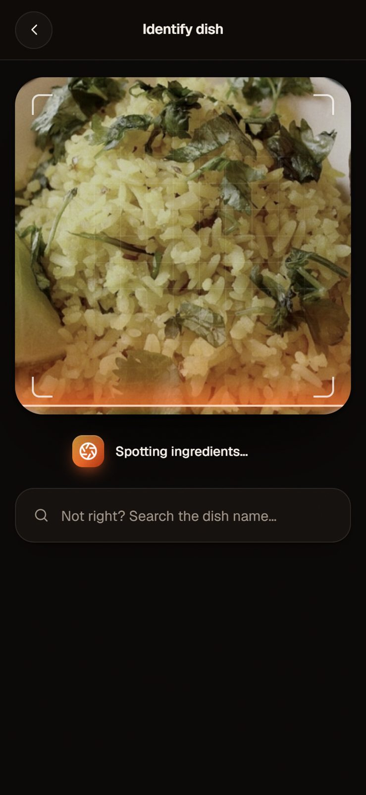
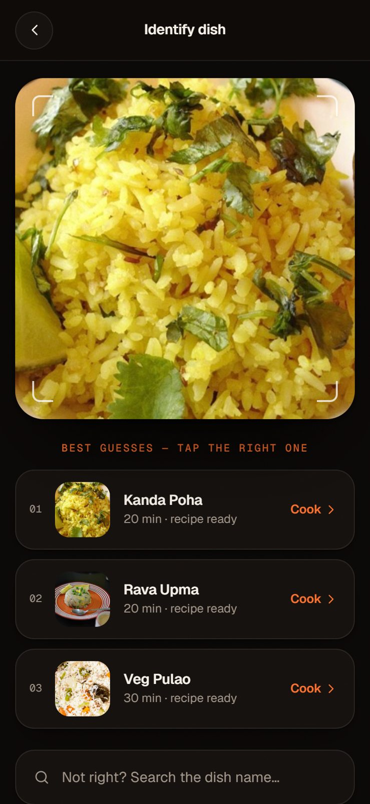
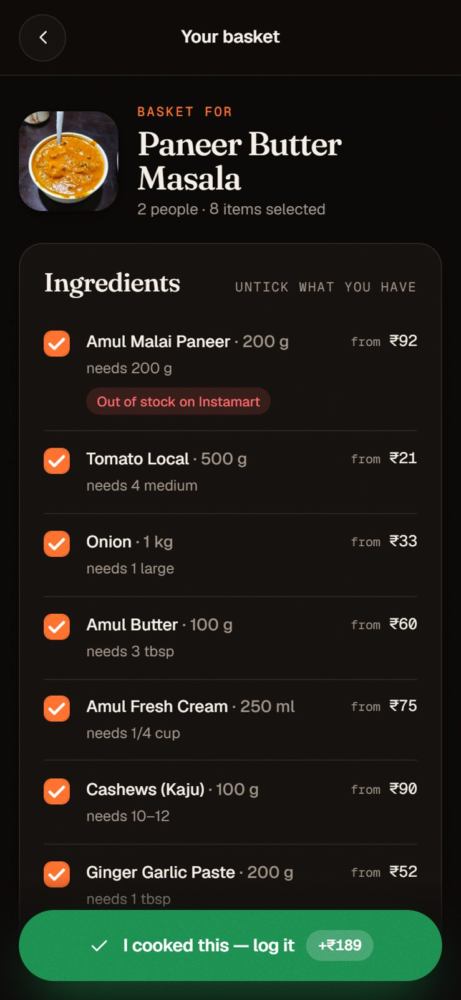
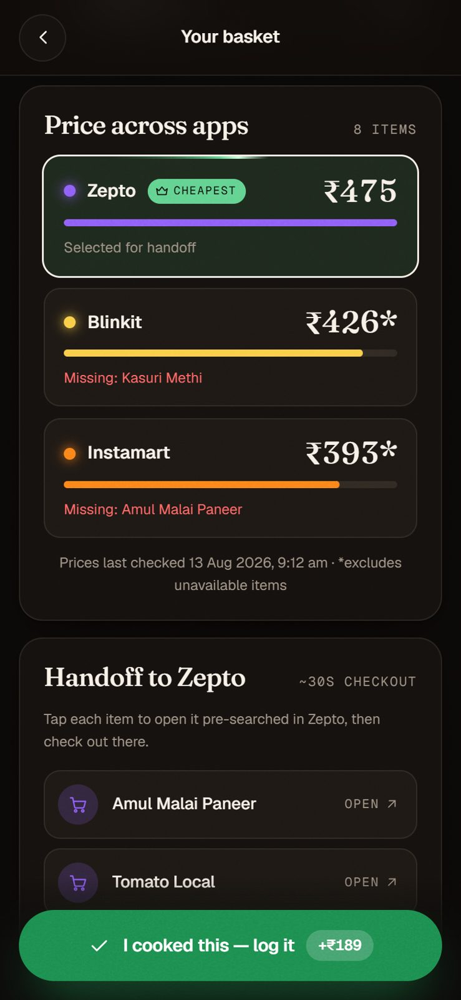
Two months of cooking at home
| Metric | 12 Aug – 10 Oct 2026 |
|---|---|
| Meals cooked instead of ordered | 61 |
| Spent on ingredients | ₹7,610 |
| Same meals, delivered | ₹18,079 |
| Kept from delivery | ₹10,469 (58% less spent) |
| Average saved per meal | ₹172 |
| Average calories per serving | 369 kcal |
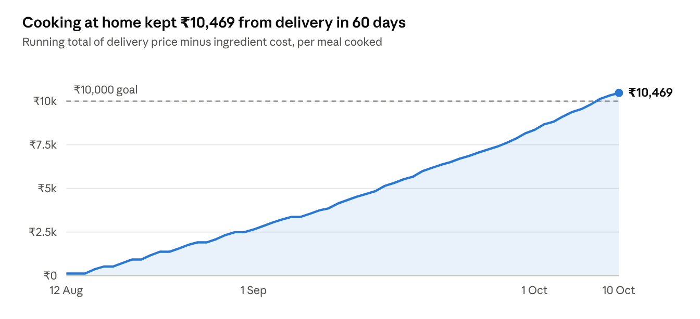
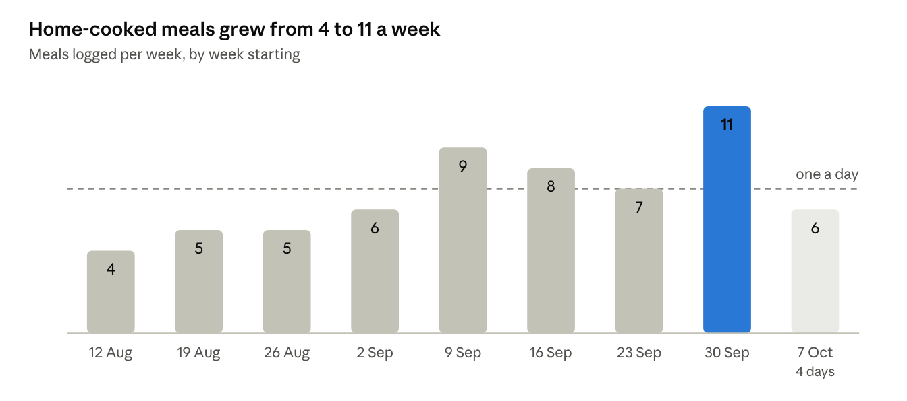
The habit is the real result. At this pace, cooking at home keeps about ₹63,000 a year out of delivery apps — and every meal had a known calorie count, averaging 369 kcal per serving.
Built to feel like a food magazine
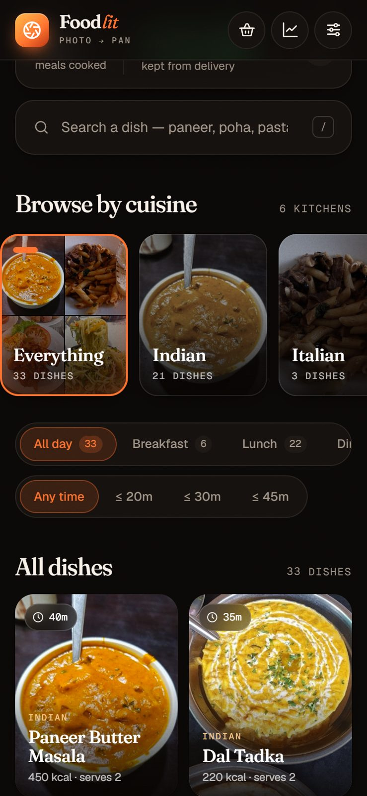
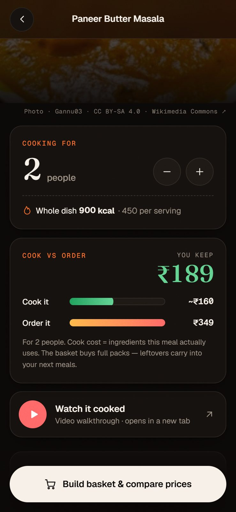
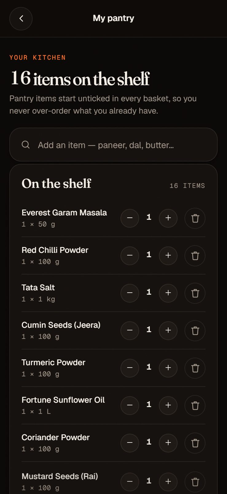
- Hand off instead of checking out — no app offers a public ordering API, so each item opens pre-searched in the cheapest app.
- A price snapshot, not scraping — prices are refreshed by hand with a “last checked” date.
- Show the money first — the cook-vs-order comparison sits above the ingredients.
- Local-first data — meals and pantry live on the device, with export and import for backup.
Next: let the app do the shopping
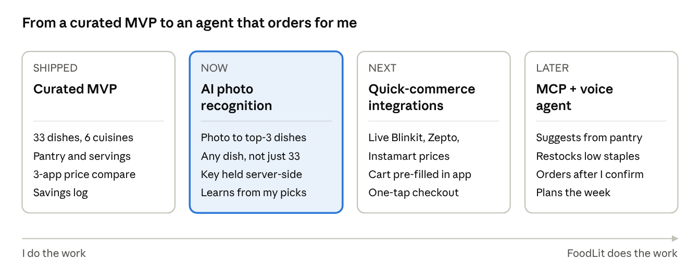
- Now — AI photo recognition: move the vision call behind a small server and generate recipes for any dish.
- Next — Quick-commerce integrations: live prices and stock, a pre-filled cart, one-tap checkout.
- Later — MCP server and voice agent: “what’s for dinner?” answered from my pantry, with staples restocked from the cheapest app — money only moves after I say yes.
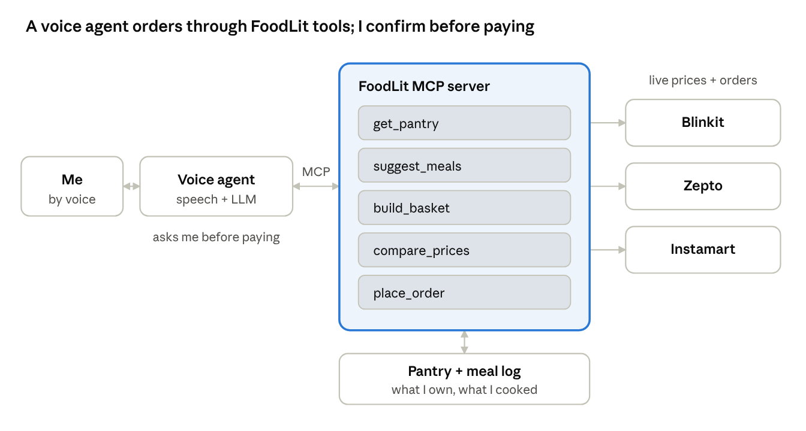
What I learned
The running savings total did more for the habit than any recipe feature. Making the benefit visible after every meal turned “I should cook more” into something I could see working.